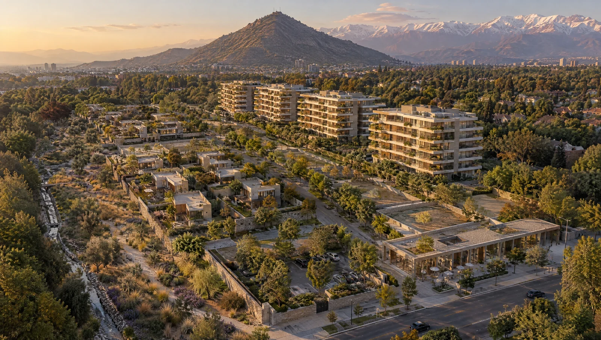
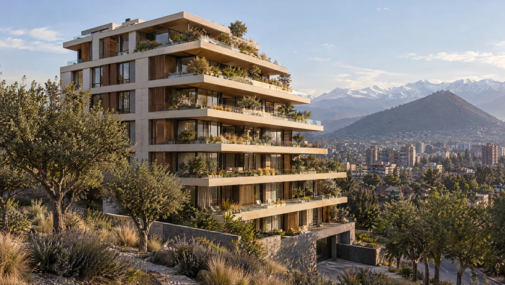
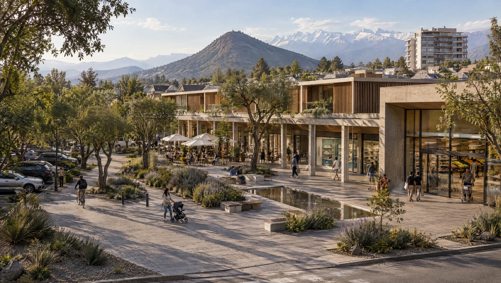
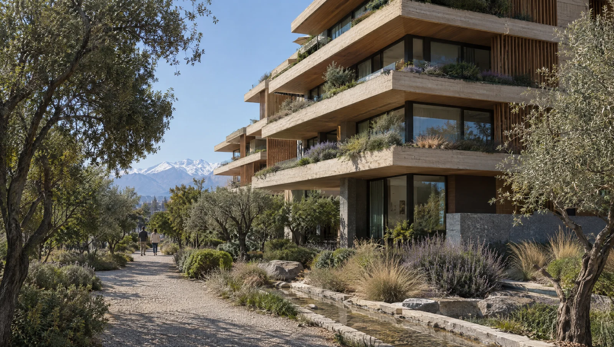
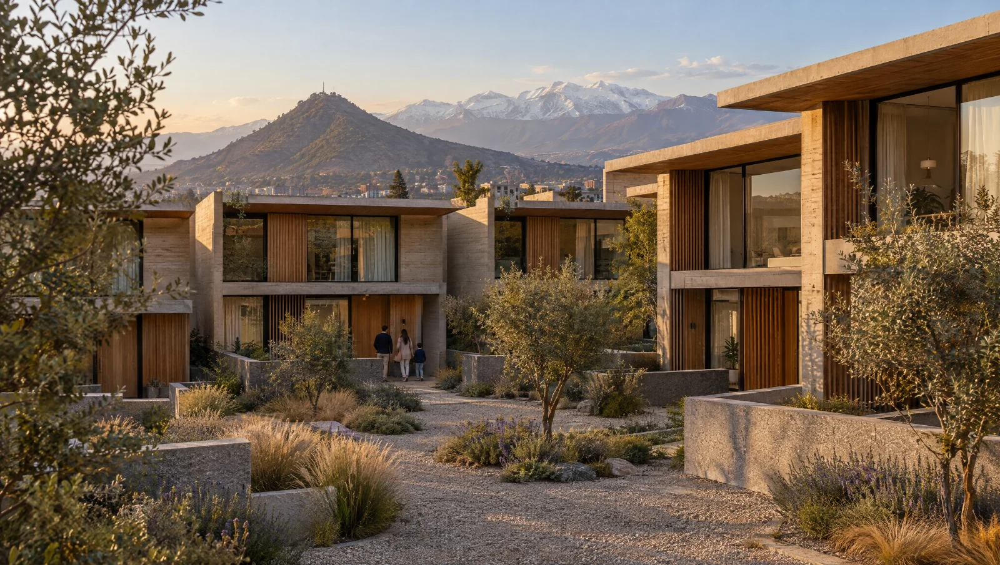

Vitacura · Santiago de Chile · Octubre 2026
Trece hectáreas en Vitacura, entre cuatro
El dueño del paño Lo Recabarren se prepara para venderlo por lotes. Cuatro inversionistas pueden ofrecer por el paño entero, en un solo cierre, y desarrollar cada uno su propio lote.
En una página
Comprar el paño en una mano, desarrollarlo en cuatro
Una sociedad común compra los 130.686 m² en un solo cierre y los divide en cuatro lotes de unos 32.700 m², cada uno con un producto distinto. Cada socio desarrolla el suyo, con su propio equipo y su propio financiamiento. Repartido entre cuatro, el paño se construye completo a la vez sin que nadie concentre ~US$185 MM en un solo terreno. Un comprador único que avance por etapas termina cerca de 2045 y rinde 8,6%; los cuatro socios, 11,6% cada uno.
Para el vendedor, 17,5 UF/m² al contado está en línea con lo que obtendría vendiendo por lotes (entre ≈15,7 y ≈18,5 en valor presente, según a cuánto se vendan los lotes), con un solo cierre en vez de cuatro o cinco. Si contraoferta, cada UF/m² adicional resta cerca de 0,7 puntos de TIR a cada socio.
Por qué ahora
El vendedor va a vender por partes; hoy se puede ofrecer por el todo
El vendedor encargó la venta a GPS, que tras sondear a los inversionistas activos le recomendó dividir el paño en cuatro o cinco lotes con vocaciones distintas y exclusividad de producto, para cobrar a cada comprador su mejor precio. Según su asesor, el directorio lo aprobó en principio y el proceso saldría al mercado en las próximas semanas.
La tesis del vendedor y la nuestra son la misma; la diferencia es quién hace la división. Una carta de interés no detiene su proceso, pero una oferta firme por el paño entero, de cuatro socios identificados, le da una alternativa concreta antes de que los lotes se compitan por separado.
- HoyByC tiene el modelo, la división en cuatro lotes y los números del paño.
- Próximas semanasGPS abre el proceso de venta por lotes. Desde ahí, cada lote se compite por separado.
- Nuestra propuestaUna carta de interés por el paño completo, de cuatro socios, antes de la apertura.
- 1T 2027Compraventa en un solo cierre y división en cuatro lotes, sujeta a due diligence.
Dónde está
Entre el Club de Polo y la Costanera Norte
El paño limita al poniente con el Club de Polo y Golf, al oriente con el barrio residencial de Camino Agua del Palo, y al sur con Av. Santa María y el acceso directo a la Costanera Norte. Sus vecinos inmediatos son la Universidad Adolfo Ibáñez, el Club de Planeadores y Boragó.

Vista aérea hacia el norte. Al frente, sobre Av. Santa María, los edificios de Tánica y la Universidad Adolfo Ibáñez; detrás, el paño; a la izquierda el Club de Polo y Golf; al fondo, los cerros de Lo Curro. Imagen © Google Earth.

Cuatro lotes, cuatro productos
Un barrio que se construye a la vez
Cada lote tiene un cuarto del paño y un producto propio. Los departamentos miran al Club de Polo, el comercio queda en el acceso por Av. Santa María y las casas hacen la transición hacia el barrio de Camino Agua del Palo. Dos lotes son departamentos de segmentos cercanos (120 y 100 m²); su convivencia es el principal riesgo comercial y está considerada en el escenario conservador.
División indicativa trazada por ByC sobre el deslinde del vendedor, en partes de igual superficie. La definición final depende del Certificado de Informes Previos, del plano de loteo y de lo que acuerden los socios. Imagen © Google.
Lo que podría ser · un ejemplo
Un barrio, no una torre
Edificios de ocho pisos, casas en torno a patios y un centro de barrio anclado en un supermercado, junto al parque público ya cedido y usando cuatro de cada cinco metros edificables. Es un ejemplo de partida: cada socio define el diseño de su lote.

Imagen generada con IA · ejemplo referencial
Ejemplo IA1Departamentos premium · 18.600 UF
120 m² útiles a 125 UF/m² (15.000 UF) más dos estacionamientos a 1.800 UF cada uno. Cinco edificios frente al Club de Polo.

Ejemplo IA2Departamentos y centro de barrio
4.000 m² arrendables en el acceso, anclados en un supermercado, más cuatro edificios de departamentos como los del lote 1. El comercio se construye primero, se arrienda a 0,85 UF/m² al mes y se vende estabilizado a un cap rate de 7%.

Ejemplo IA3Departamentos de 100 m² · 16.400 UF
100 m² útiles a 128 UF/m² (12.800 UF) más dos estacionamientos. Un segundo producto, más compacto, para el comprador que deja la casa y no busca 120 m². Cinco edificios en la franja norte.

Ejemplo IA4Town houses · 25.300 UF
Casas de 220 m² a 115 UF/m² construido, en dos y tres niveles, con acceso propio y patio, agrupadas en torno a patios comunes.
Precios de lista con IVA, sin alza real. Imágenes y clips generados con IA por ByC a modo de ejemplo; no representan un proyecto aprobado ni el trabajo de ningún estudio de arquitectura.
Por qué entre cuatro
Construir todo a la vez, con un cuarto de la exposición cada uno
Un departamento se vende igual sea quien sea el dueño del terreno; lo que mueve el retorno es cuántos proyectos se tienen en venta al mismo tiempo. Construir el paño completo en paralelo significa concentrar del orden de US$185 MM en un solo terreno, una sola comuna y un mismo ciclo de mercado. Por prudencia, quien compra solo suele avanzar por etapas aunque tenga el capital, y el terreno que espera su turno pierde valor. Entre cuatro, el paño se construye completo y cada socio mantiene una exposición acotada.
Un comprador, por etapas
8,6% TIR
- Un proyecto de departamentos detrás de otro
- Capital máximo US$154 MM
- Última venta cerca de 2045
Cuatro socios, cada uno su lote
11,6% TIR por socio
- Los cuatro proyectos en paralelo
- Capital máximo US$33–60 MM por socio
- Última venta entre 2035 y 2038
Un comprador único podría lograr el mismo retorno concentrando ~US$185 MM en este terreno; el club lo consigue con una cuarta parte de esa exposición para cada socio.
Mismo terreno a 17,5 UF/m², mismos productos y precios; escenario conservador. TIR real, después de impuestos y sin deuda.
Los números de cada socio
Misma TIR para los cuatro, con el suelo repartido según su valor
Flujo trimestral por lote, en UF reales, con IVA, impuesto de primera categoría, contribuciones del sitio eriazo, urbanización y mitigaciones viales a prorrata, comercialización de 7,5% de las ventas y precios sin alza real. Paño a 17,5 UF/m², el cierre esperado, repartido entre los lotes de modo que todos obtengan el mismo retorno. Dos supuestos de venta:
Mueva el control para elegir qué parte del terreno y de la obra financia un banco, a UF + 4,4% real. Las cifras de abajo cambian con él.
Apalancamiento alto: más retorno y más sensibilidad a los plazos de venta.
- Capital máximo por socio
- 19–35 MM US$
- Aporte al cierre por socio
- 9–14 MM US$
- Deuda máxima, cuatro lotes
- 131 MM US$
- Intereses, cuatro lotes
- 15 MM US$
TIR real de cada socio según la deuda · escala logarítmica
| Lote | Viviendas | Precio interno UF/m² | Terreno MM US$ | Capital máx. MM US$ | Con deuda 50% MM US$ | Ventas MM US$ | Utilidad MM US$ | Múltiplo | Plazo años |
|---|
Capital máximo: caja acumulada más negativa del lote, sin deuda y con la deuda elegida arriba a UF + 4,4% (intereses capitalizados y pagados con las escrituras, sin escudo tributario). El caso base usa 50%; cada socio puede financiar su lote con más o menos deuda. Más deuda sube el retorno pero también el riesgo si las ventas se atrasan. Ventas a precios de lista con IVA; la utilidad es neta de IVA e impuesto de primera categoría, antes de impuestos finales del socio. El promedio de los precios internos (17,7) incluye 1% de costos de estructuración. US$ a $940,9 y UF a $40.926 (paridades del modelo).
Por qué dos escenarios. En el favorable, cada lote vende al ritmo de un proyecto aislado en Vitacura. Pero tres lotes de departamentos a ese ritmo venderían cerca del 40% de lo que absorbe hoy la comuna, así que el conservador supone que se quitan clientes entre sí: 3 departamentos al mes por lote. Los plazos se alargan entre uno y dos años y medio, y la TIR baja de 13,3% a 11,6%. La propuesta se evalúa con el conservador.
Riesgos
Qué pasa si algo sale peor de lo previsto
| Si… | TIR sin deuda | Con deuda 50% |
|---|---|---|
| Todo sale como en el escenario conservador | 11,6% | 14,8% |
| Los departamentos y casas se venden 5% más baratos | 10,0% | 12,5% |
| La obra cuesta 10% más | 9,8% | 12,2% |
| Los permisos se atrasan un año | 9,9% | 12,4% |
| Las tres cosas anteriores pasan a la vez | 7,1% | 8,3% |
Paño a 17,5 UF/m², TIR real después de impuestos. Aun en el peor caso el proyecto no pierde capital. La deuda sube el retorno en todos los casos, pero también el riesgo: si la tasa sube a UF + 5,4%, la TIR con deuda baja de 14,8% a 14,4%.
- Que los lotes se quiten clientes. Dos lotes son departamentos de tamaño parecido; por eso el escenario conservador ya supone ventas más lentas. Se acota diferenciando productos y escalonando lanzamientos.
- Permisos. Los ocho pisos dependen de Conjunto Armónico y la aprobación ambiental es del proyecto del vendedor. Se revisan antes de comprar.
- Costo de obra. Todavía sin cotización. Se cotiza con constructora durante la due diligence.
- Un socio que no cumple. El pacto define aportes, garantías y qué pasa con su lote antes de firmar.
La oferta
Abrir en 16,5, cerrar cerca de 17,5, no pasar de 18,5
Vendiendo por lotes, al vendedor le quedarían en valor presente ≈15,7 UF/m² si los lotes se venden a precios del caso conservador, ≈17,3 si se venden a ≈19 y ≈18,5 si GPS consigue 20; menos aún si tiene apuro de caja o si las ventas se demoran. Una oferta de 17,5 al contado, en un solo cierre, queda en el centro de ese rango. Sobre 18,5 la TIR del escenario conservador baja de 11%, y ese es el techo para el club.
| Etapa | UF/m² | Paño MM US$ | Conservador sin deuda | Conservador con deuda | Favorable sin deuda | Favorable con deuda |
|---|---|---|---|---|---|---|
| Oferta inicial | 16,0–16,5 | 91–94 | 12,6–12,2% | 16,2–15,7% | 14,4–14,0% | 19,2–18,6% |
| Cierre esperado | 17,5 | 99 | 11,6% | 14,8% | 13,3% | 17,5% |
| Máximo | 18,5 | 105 | 11,0% | 13,9% | 12,6% | 16,5% |
TIR de cada socio según el precio ofrecido por el paño
Real, después de impuestos y sin deuda · UF/m² por el paño completo
El precio interno no es parejo
Si los cuatro pagaran 17,5 UF/m², el socio de las casas quedaría con 7,0% de TIR y los de departamentos con cerca de 12,7%. El suelo se reparte según lo que vale cada lote:
| Lote | Precio interno UF/m² | Terreno MM US$ | TIR si pagara 17,5 parejo |
|---|
Precio interno del escenario conservador; en el favorable cambia hasta 1,1 UF/m² por lote. Incluye 1% de costos de estructuración. El precio interno se fija en el pacto, antes de la compra.
Cómo funciona el club
Una compra común, cuatro desarrollos independientes
- Sociedad comúnCompra el paño en un solo cierre y ejecuta lo que es de todos: urbanización, mitigaciones viales, aportes y la relación con el municipio. Cada socio aporta en proporción a su lote.
- División en cuatro lotesCada socio recibe su lote al precio interno acordado y lo desarrolla en su propia sociedad, con su arquitecto, su constructora y su financiamiento.
- Pacto de sociosAsignación de lotes, precio interno, reglamento del master plan (alturas, frentes, privacidad hacia los vecinos), aportes, garantías, incumplimiento, salida y derecho preferente.
- ByCEstructura la compra, coordina la due diligence y el pacto, y acompaña la relación con el vendedor. Sus honorarios y cualquier participación se informan por escrito antes de la carta de interés.
Lo que se pide a cada socio
El plazo
De la carta de interés a la última escritura
Cada barra va desde la compra hasta la última escritura del lote en el escenario conservador; el tramo oscuro es proyecto y permisos. En el escenario favorable cada barra se acorta entre uno y dos años y medio.
Antes de una oferta vinculante
Lo que tiene que ser verdad
- Vendedor y proceso: confirmación directa del mandato de GPS, calendario y disposición a un cierre único.
- Certificado de Informes Previos por lote: constructibilidad, altura con Conjunto Armónico y uso comercial.
- RCA y estudio vial: titular, condiciones, qué es transferible y si hay reclamaciones; monto de las mitigaciones.
- Títulos, suelo y riesgos naturales: estudio de títulos de los 20 roles, mecánica de suelos y quebradas.
- Cotización de obra y urbanización con constructora, y comparables de precio y absorción por producto en Vitacura.
- Pacto de socios, tributación y libre competencia de la división y de los lanzamientos coordinados.
El siguiente paso
Una reunión antes de que se abra el proceso
Proponemos revisar con cada interesado el modelo abierto por lote, los supuestos y la estructura del club, y definir en noviembre quiénes forman el grupo y con qué precio sale la carta de interés.
ByC Servicios Financieros S.A. actúa como asesor de los inversionistas y no tiene mandato del vendedor. Este documento es confidencial y personal, tiene carácter informativo y preliminar, y no constituye oferta, recomendación de inversión ni asesoría legal o tributaria. La referencia al proceso de venta del vendedor se basa en conversaciones con su asesor y puede cambiar. Las cifras provienen del modelo de valorización de ByC, en UF reales y a paridades del 17 de agosto de 2026 (UF $40.926 · US$ $940,9), con el paño a 17,5 UF/m² (rango de 16,5 a 18,5) y una división indicativa en cuatro lotes de igual superficie. Las cifras con deuda suponen financiamiento bancario del 50% del terreno y de la obra a UF + 4,4% real, con intereses capitalizados y prepago con las escrituras, sin escudo tributario de intereses; la tasa y el porcentaje dependen de la aprobación de cada banco. Todas las cifras están sujetas a verificación de constructibilidad municipal, costos de obra, mitigaciones viales y absorción comunal.
Las imágenes y clips del proyecto fueron generados con inteligencia artificial a modo de ejemplo: son conceptuales y referenciales, están sujetos al proyecto de arquitectura y a los permisos que correspondan, y no representan un proyecto aprobado. Las imágenes de contexto y satelitales son © Google. Copia preparada para {{PERSONA}}.
Magdalena 181, Of. 1301, Las Condes, Santiago